Augustenborg is a district of Malmö city. As by chance, the lab and workshop of IET is situated here. During the last months of 1998, Morten Ovesen, who is living in the area, got information that Augustenborg would be turned in to an ecocity. Along with this the inhabitants were asked if they wanted to participate in
the genesis. There was no doubt about that we in IET and especially Morten wanted to do this.
Ecocity Augustenborg is the name of many part projects that have the goal to turn Augustenborg into a more social, economical and ecological sustainable living area. The Ecocity project was displayed during the Bo01-exhibition in the spring of 2001. (Probably IET will have a smaller exhibition regarding the partition of IET and the background of the concept.) One of the main goals has been to involve the inhabitants as much as possible. IET, through Morten, was mostly involved in the handling of the local surface water. However, we will mention some other interesting part projects.
In the surrounding industrial areas green roofs were laid out. Almost 9000 m
2 or ~30% of the roof area were covered in moss and sedum plants in order to take care of the rain water and isolating the buildings. The life length of the roofs and
the biological plurality will be increased. The inhabitants of Augustenborg were involved in the design process of the green areas both in the yards and in the park, all within the frame of the character from the 50-ties. The students and the personal from the local school worked on a proposal to change the asphalt school yard so that it would be used as a resource for education and play.
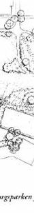 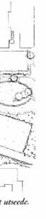 |
| The picture shows the new look of the Augustenborg Park. |
| |
Among other things a meandering creek flows down to an artificial wetland
in true Schauberger style.
On some of the houses the tin facade were removed and the original facade were renovated in order to increase the inner environment and the outer impression. Some actions to decrease the use of energy and water in the area were to renovate buildings and that conventional vehicles were replaced with electrical trains rolling on rubber wheels. These trains were produced locally. The goal was to collect 90 % of the garbage that could be reused. Regain and composing by using a local collecting system would also create local work opportunities.
As mentioned before IET was mostly involved with the handling of the surface water. Here the most important goals were to reduce the problem with flooding of canals and the cloaks of the city. In some parts of the are the surface water
were lead in a visible system of smaller canals, ditches, wetlands and ponds.
Every year Augustenborg is struck by floodings. Besides that the local water system is joined together into one pipe to the cloak system of the city. During the flooding, the pipe system is over filled and in the other end untreated wastewater is flowing out in the sea. The most important part of this is the open canal system that is designed so the rain water is delayed and reduced before it reaches the cloak system.
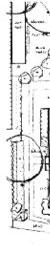 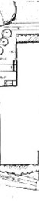 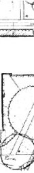 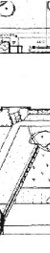 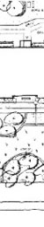 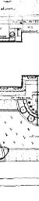 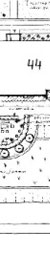 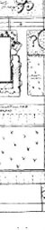 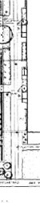 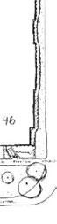 |
The picture shows the plan of the first phase of the open canal system at "Arla".
An artificially wet land was also planned. |
| |
A major part of the area was included in the local surface water system with open canals and ponds. The system consists of minor canals leading the water from the drainpipes to bigger canals. It is just by chance (again) that the work begun at "Arla", the part of Augustenborg where Morten is living, but today he can enjoy looking over the first part of the canal system, that he has designed.
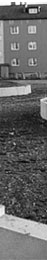 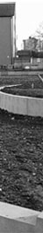 |
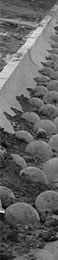 |
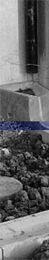 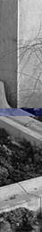 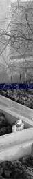 |
| The construction of the wet land at "Arla". |
The canals with drop formed hills. |
A drain pipe stone with surrounding smaller canals. |
| |
Along with the little bigger canals the water is lead to even bigger canals further on to gathering ponds that creates the artificial wetlands.
The idea with the drop formed hills is the water is set in a self generated swinging when it is flowing in the canal. A comparison can be done with the Flowforms, invented by John Wilkes. A good example of these Flowforms can be found at the Antroposophic centre in Järna, near Stockholm Sweden. These Flowforms are made by Nigel Wells, Virbela Atelier.
Like the Flowforms the canal is rinsed from sludge and gravel and even the water it self is purified due to the vortex movement that is generated. The water is also oxygenated in this way. In some way you can say that the water is purifying it self the same way it is done in a natural water way. The idea came to us when we experimented with our lab canal. Two landscape architects had got the mission to shape the area. When this reached Morten's ears he contacted them. Together we tried to develop some kind of guiding vanes but this never worked very good, as we never got the right kind of swinging in the water. Besides this a lot of sludge was gathered in some places. Suddenly one of us had placed three stones in a triangular formation and after a couple of seconds we could observe that the water was swinging or meandering from one side to the other. As in the case with the Flowforms the meandering comes and goes in its own rhythm. The result is a complex and beautiful flow of the water.